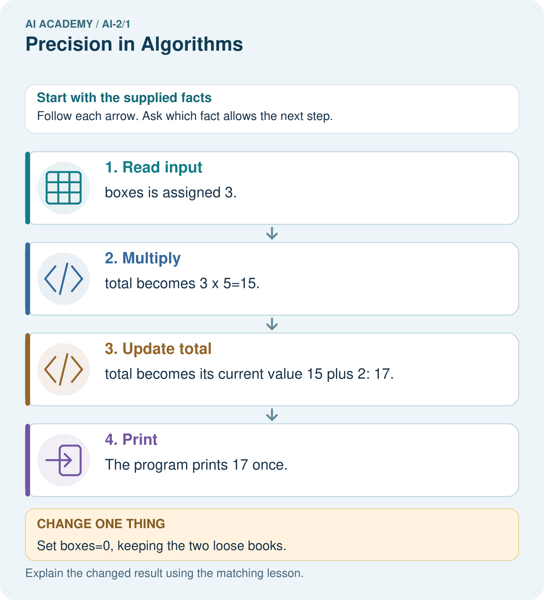
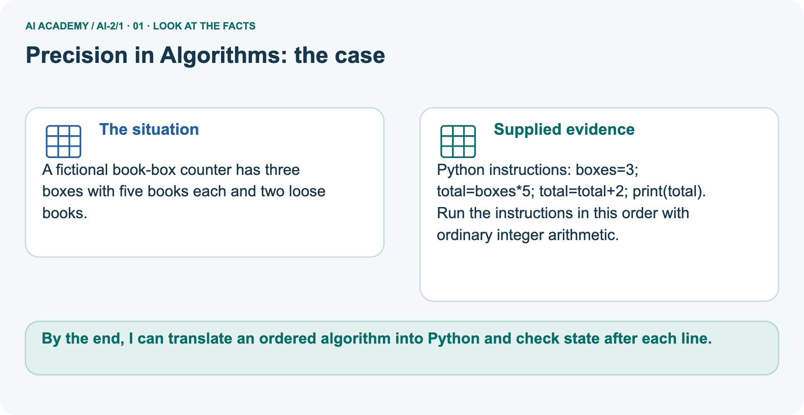
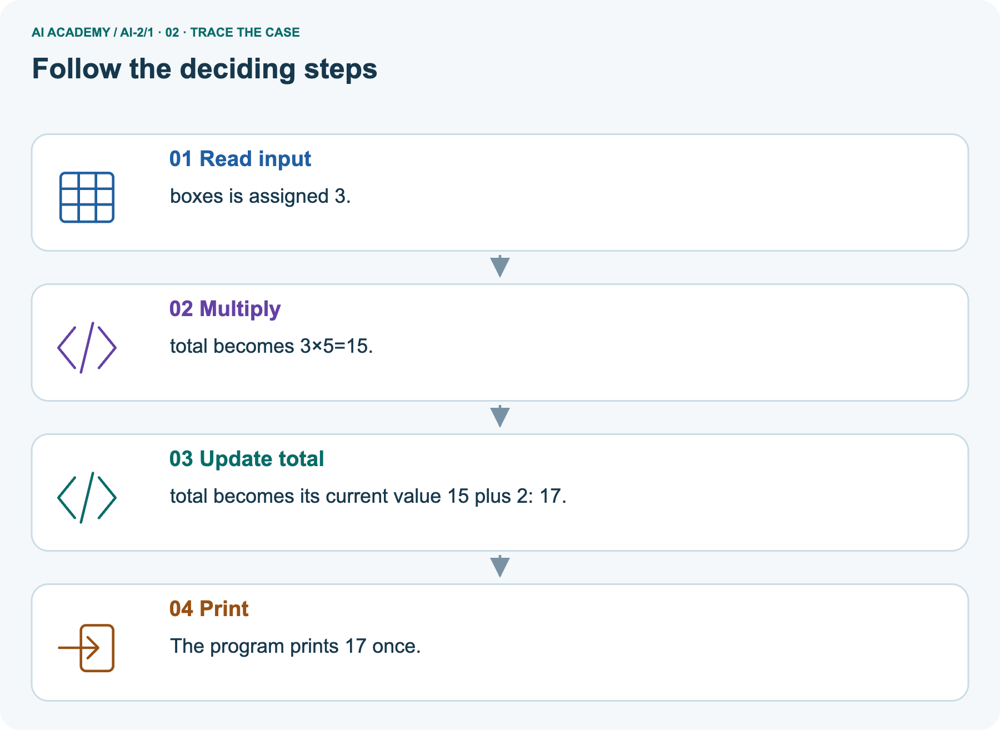
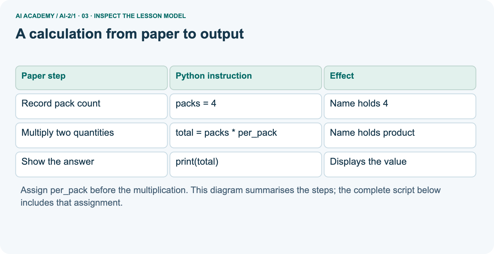
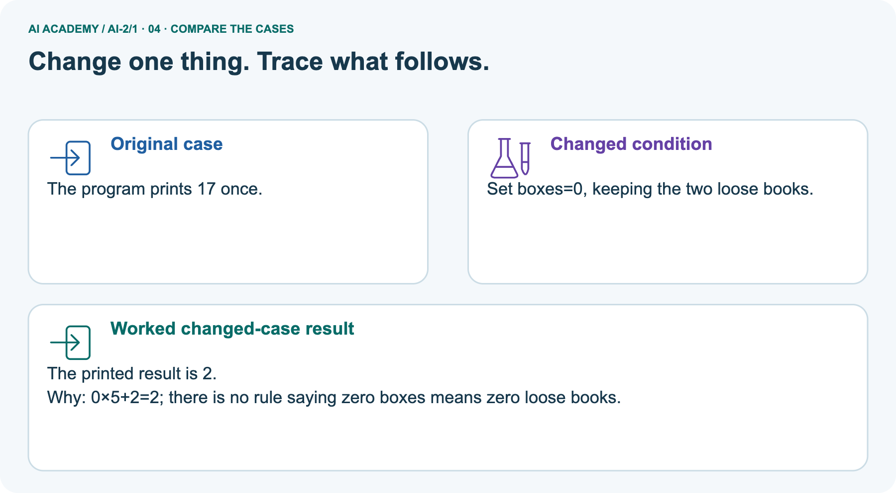
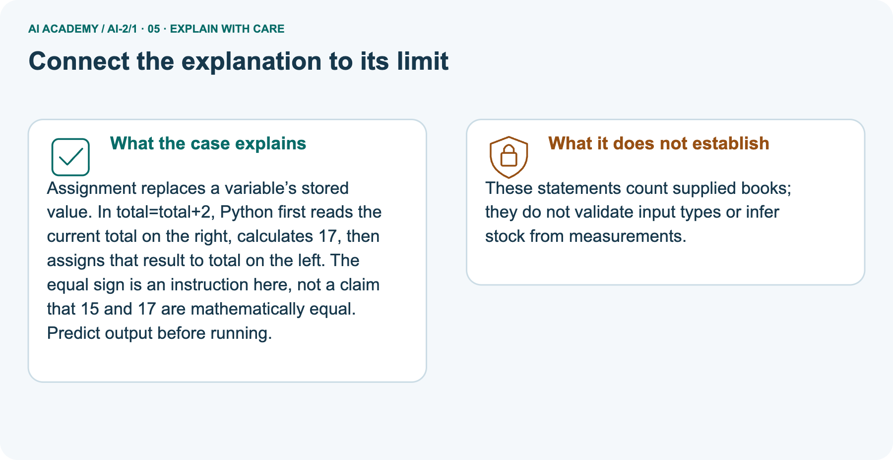
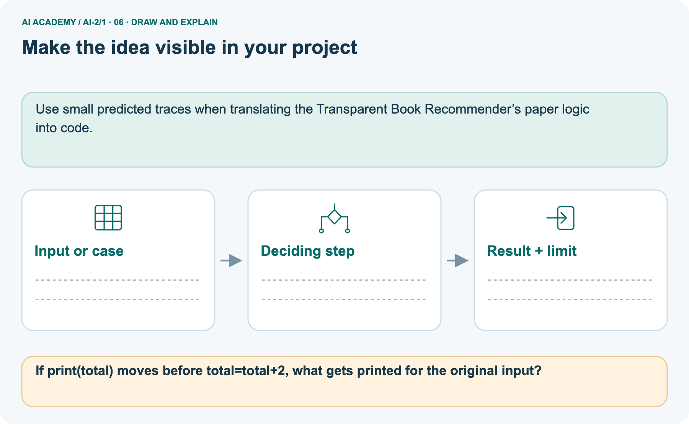

AI Academy · Level 2 · Grade 7 · Week 1 · Workbook
Precision in Algorithms
Learn to understand, design, build, test and explain AI systems responsibly.
Project: Transparent Book Recommender
THE CONNECTED WEEK
One connected first-program evidence record.
Translate the counter calculation, predict and observe outputs, explain an order error and write the independent tile script.
Keep one habit: Keep saved code, expected output, actual output/error and reasoning together.
Main lesson · Section 1
Recall: reconnect earlier ideas
Retrieve before opening notes.
Retrieve and explain
Try the recall before opening notes. Then use a different colour or a labelled second line to correct your explanation.
Without opening the old lesson, explain one key idea from Expo and Defense. Give an example and a mistake that the idea helps you avoid.
Earlier wording, alternatives and picture transcripts
Expo and Defense
Main lesson · Section 12
W1 · Translate equal groups into four lines
Use the supplied complete script reference.
Your evidence record
Script reference: packs = 4; per_pack = 6; total = packs * per_pack; print(total), with each statement on its own line. The supplied quantities are whole and nonnegative. For W2 change only packs to 5, save and run the complete file; retain expected and actual outputs separately. This script does not yet validate typed input.
Write the complete four-line script for 4 packs of 6. Beside each line explain what it does. Which line displays information?
Main lesson · Section 13
W2 · Predict before running each saved version
Record actual outputs or labelled paper traces.
Your evidence record
Make records for 4 packs of 6, then 5 packs of 6. Predict before running. Record actual output, any error and what changed. If working on paper, label both results as traces.
Main lesson · Section 14
W3 · Explain a read-before-assignment error
Use a fresh run, then restore the valid statement order.
Your evidence record
Move print(total) to the first line of a fresh script. Predict what happens and why. Put the lines back into an order that meets the requirement.
Main lesson · Section 16
W5 · Keep a checkable, limited conclusion
Separate execution success from meeting the requirement.
Your evidence record
Explain the difference between a successful run and a correct calculation. State one limit of this program and what you would keep so another person can check your work.
Main lesson · Section 4
W4 · Transfer the procedure independently
Keep one first attempt before hints or feedback.
Read and explain independently
A fictional shelf has 3 trays of 7 tiles each. Write a four-line Python script using trays, per_tray and tiles. Predict its output. Then change only trays to 0 and predict again. Explain why adding the two quantities is wrong.
Keep a fair record
Attempt this case before feedback. Record any help. Earlier examples below are further practice; a case already practised with feedback cannot establish fresh transfer.
Earlier wording, alternatives and picture transcripts
Independent case: Transfer the procedure independently
Main lesson · Section 9
Project · Keep the decision and its evidence
Add this week’s change to your existing project record.
Your evidence record
Write exact scoring steps so two people rank the same book the same way.
The project change and evidence I will keep
Main lesson · Section 17
Feedback · Repair and return
Keep the first attempt, the repair and a changed-case return.
Your evidence record
| Evidence | My record |
|---|---|
| Worked alone / hint / model | |
| First step I repaired and why | |
| New case checked later; date and result | |
| What I can now explain without notes | |
| One remaining question |
Revisit this idea with your teacher after a delay. Familiarity is different from explaining and using it on a changed case.
Main lesson · Section 10
Finish · Judge the evidence in your work
Point to work that supports your confidence level.
Your evidence record
- I can explain the mechanism.
- I can show evidence.
- I can handle a changed case.
- I can name a limit.
Mark each as not yet, with help or independently, and attach supporting work.
Teacher review ____________________ Next step ____________________
Reference bank and extra practice
Choose the reference that helps your next step.
Reference · Supported W2 record
Reference · Section 2
Reference · Supported W2 record
This is the same W2 attempt. Keep one response record.
Use this when helpful
Use W2: Predict then observe for From a paper algorithm to Python. Record the answer once; the lesson and workbook refer to the same attempt.
| Given inputs | Procedure I chose | Middle steps | Result and check |
|---|---|---|---|
Extra practice · Repair the explanation
Reference · Section 3
Extra practice · Repair the explanation
Explain the deciding fact before discussing the answer.
Use this when helpful
Use the worked case for From a paper algorithm to Python. Proposed explanation: “An equals sign displays the answer”. Decide whether this explanation is supported.
Point to the step or supplied fact that decides; explain your repair if needed.
Reference · Original learning target
Reference · Section 5
Reference · Original learning target
Use this target to inspect an explanation.
Use this when helpful
Write an algorithm for borrowing a classroom book when the book may already be on loan. Include inputs, a no-copy-available outcome and a check that prevents two borrowers receiving the same copy.
Extra practice · A complete case
Reference · Section 6
Extra practice · A complete case
Try the question before checking the worked explanation.
Use this when helpful
A sandwich algorithm says add spread, close it, cut it, without stating materials or directions.
Expose assumptions and write a precise paper simulation.
Show your trace, calculation or evidence
Extra practice · A changed case
Reference · Section 7
Extra practice · A changed case
Keep this practice separate from the reserved independent attempt.
Use this when helpful
A robot starts at square 0. Replace move a bit and stop nearby with instructions that put it exactly on square 3 using steps of one square.
My practice answer and reason
Week 1 Test and reflect
Extra practice · Design a revealing test
Reference · Section 8
Extra practice · Design a revealing test
Predict before tracing or testing.
Use this when helpful
Create a changed input, boundary case or missing-information case. Write the expected answer or safe response before testing.
| Test record | My evidence |
|---|---|
| Changed input or condition | |
| Expected answer or fallback | |
| Observed result | |
| Why the result occurred |
Reference · Original target response space
Reference · Section 11
Reference · Original target response space
This teaching case is practice rather than a fresh assessment.
Use this when helpful
Write an algorithm for borrowing a classroom book when the book may already be on loan. Include inputs, a no-copy-available outcome and a check that prevents two borrowers receiving the same copy.
Record support used: none, hint or teacher explanation.
Reference · Independent-case response copy
Reference · Section 15
Reference · Independent-case response copy
This duplicates W4. Reuse the same first-attempt record.
Use this when helpful
A fictional shelf has 3 trays of 7 tiles each. Write a four-line Python script using trays, per_tray and tiles. Predict its output. Then change only trays to 0 and predict again. Explain why adding the two quantities is wrong.
Extra practice · Use the worked picture
Reference · Section 18
Extra practice · Use the worked picture
Keep the explanation and the support you used.
Use this when helpful
A fictional book-box counter has three boxes with five books each and two loose books.
Python instructions: boxes=3; total=boxes*5; total=total+2; print(total).
Run the instructions in this order with ordinary integer arithmetic.



If print(total) moves before total=total+2, what gets printed for the original input?
Support used: alone / hint / worked example. This record is practice evidence.
Project connection: Use small predicted traces when translating the Transparent Book Recommender’s paper logic into code.
Reference · Project portfolio record
Reference · Section 19
Reference · Project portfolio record
Extend your main project response when helpful.
Use this when helpful
Project: Transparent Book Recommender
Current milestone: Frame the need. Name the user, the problem, allowed inputs and a safe simple starting method.
Use small predicted traces when translating the Transparent Book Recommender’s paper logic into code.
| Evidence to keep | My record |
|---|---|
| This week’s input and deciding step | |
| Prediction and actual result (or labelled paper trace) | |
| One change since the previous checkpoint and why | |
| One error or limit and the next test |
Extra practice: pictures, repair and feedback
Reference · Section 20
Extra practice: pictures, repair and feedback
Attempt each question before opening its explanation. Use one browser or paper copy.
First supported question
A fictional book-box counter has three boxes with five books each and two loose books.
Which labelled step matches this detail? The program prints 17 once.
1. Read input
2. Print
3. Multiply
4. Update total
Hint if needed: Read the steps in the pictorial case. Match the supplied detail to the stage that performs or records it.
Practice 1: explain the deciding evidence
Check the first explanation
After your attempt, compare with the supported explanation: Print The program prints 17 once. Assignment replaces a variable’s stored value.
In total=total+2, Python first reads the current total on the right, calculates 17, then assigns that result to total on the left. The equal sign is an instruction here, not a claim that 15 and 17 are mathematically equal.
Predict output before running.
Changed-case question
Changed-case practice: Set boxes=0, keeping the two loose books. Which conclusion is supported by the supplied facts?
1. This one example guarantees correct results for every future input.
2. The printed result is 2.
3. We can decide the result without examining the changed input or the procedure.
Hint if needed: Use the changed condition and the deciding step in the pictorial trace. The answer must say what follows from those facts.
Practice 2: explain the deciding evidence
Check the changed case
After your attempt, compare with the supported explanation: The printed result is 2. 0×5+2=2; there is no rule saying zero boxes means zero loose books.
Repair and save your work
Review Expo and Defense (ai-1/36). Goal: Evaluate a saved candidate and a manual baseline fairly. Short practice: Write one defensible success statement and one claim the evidence cannot support..
Return to this week and explain what you changed.
The browser lab lets you edit the supported Python examples already included in this lesson. Predict first, run, inspect the actual output or error, change one input, then run again.
Keep code, predictions, actual results and a reasoned revision together. On paper, label your result as a trace rather than an execution.
Use Download completed work in the hosted lesson to export your answers, reflections, practice feedback and code-run evidence. Open the HTML copy to read or print it.
Drafts stay in this browser when storage is available; clear drafts on a shared device.
Earlier wording, alternatives and picture transcripts
Use this supported practice once, in the browser or on paper. Keep the reserved independent assessment for a separate first attempt before teacher feedback.
Repair a missing building block
Predict, run and debug
Keep your completed work
Reference · Six-picture response sheets
Reference · Section 21
Reference · Six-picture response sheets
Choose the image that helps rather than repeating all six.
01. Precision in Algorithms: the case



A fictional book-box counter has three boxes with five books each and two loose books. Supplied facts: Python instructions: boxes=3; total=boxes*5; total=total+2; print(total).
Run the instructions in this order with ordinary integer arithmetic.
Point to the given fact that matters most. Explain why it matters.
02. Follow the deciding steps



Read input: boxes is assigned 3. → Multiply: total becomes 3×5=15. → Update total: total becomes its current value 15 plus 2: 17. → Print: The program prints 17 once.
Point to each numbered stage and explain which recorded input it uses.
03. A calculation from paper to output



A calculation from paper to output. Record pack count | packs = 4 | Name holds 4. Multiply two quantities | total = packs * per_pack | Name holds product. Show the answer | print(total) | Displays the value
Read the labels and values. Explain the relationship the model shows.
04. Change one thing. Trace what follows.



Original case: The program prints 17 once. Changed condition: Set boxes=0, keeping the two loose books. Expected result: The printed result is 2. Reason: 0×5+2=2; there is no rule saying zero boxes means zero loose books.
Predict before checking the worked changed-case result. Name what changed and what the supplied facts allow you to conclude.
05. Connect the explanation to its limit



Assignment replaces a variable’s stored value. In total=total+2, Python first reads the current total on the right, calculates 17, then assigns that result to total on the left.
The equal sign is an instruction here, not a claim that 15 and 17 are mathematically equal. Predict output before running.
Limit: These statements count supplied books; they do not validate input types or infer stock from measurements.
Explain the case, then point to a limit on the claim.
06. Make the idea visible in your project



Use small predicted traces when translating the Transparent Book Recommender’s paper logic into code. Draw your input, deciding step, result and limit.
Supported question: If print(total) moves before total=total+2, what gets printed for the original input?
Draw your project trace and justify the deciding step using evidence.